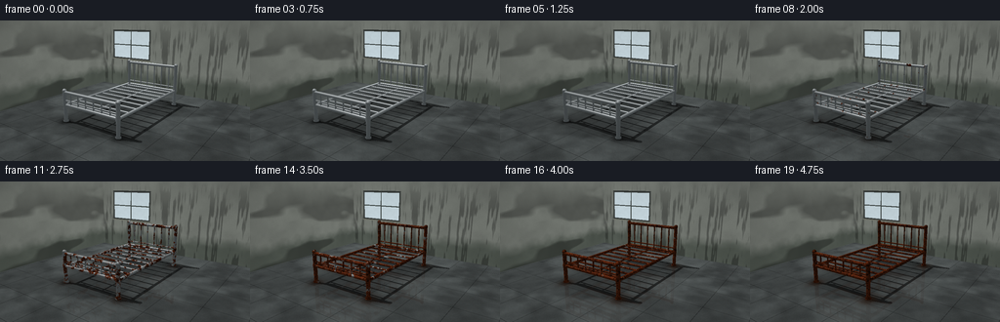
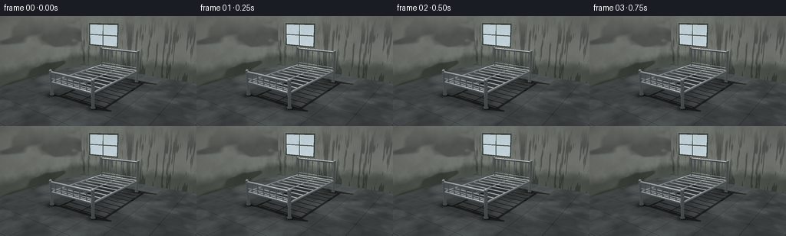
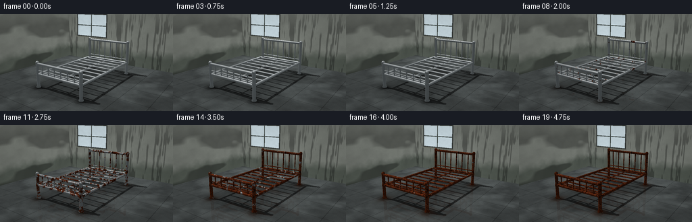
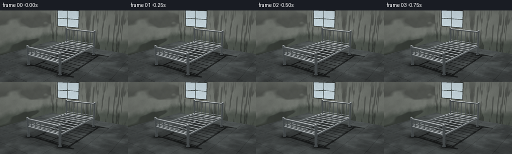

CODING AGENTS AS PIXEL WORLD MODELS
traex/GPT-6.1-Sol · phygen_160
点击播放 · 原生 RGB 像素
逐轮保存的候选
回放视频、检查图与代码变化。
每份候选均可单独播放。实际图片检查记录在下方工具轨迹中。
候选 01播放与检查图
点击播放 · 原生 RGB 像素


展开代码变化
--- 上一保存版本
+++ 本次保存版本
@@ -0,0 +1,245 @@
+from pathlib import Path
+import numpy as np
+from PIL import Image
+import artifact_io
+
+ROOT=Path(__file__).resolve().parent
+W,H,S=256,144,3
+rng=np.random.default_rng(42)
+
+# Analytic ray geometry only; no rendering libraries or outside assets.
+def unit(v):
+ return v/np.maximum(np.linalg.norm(v,axis=-1,keepdims=True),1e-9)
+
+def noise(p,scale=1,seed=0):
+ p=p*scale+seed*3.718
+ i=np.floor(p); f=p-i; f=f*f*(3-2*f)
+ out=np.zeros(p.shape[:-1])
+ for a in (0,1):
+ for b in (0,1):
+ for c in (0,1):
+ cell=i+np.array([a,b,c])
+ val=np.sin(cell[...,0]*127.1+cell[...,1]*311.7+cell[...,2]*74.7+seed*83.1)*43758.5453
+ val=val-np.floor(val)
+ out+=val*(f[...,0] if a else 1-f[...,0])*(f[...,1] if b else 1-f[...,1])*(f[...,2] if c else 1-f[...,2])
+ return out
+
+def fbm(p,s=1,seed=0):
+ return .54*noise(p,s,seed)+.29*noise(p,s*2.13,seed+3)+.17*noise(p,s*4.37,seed+5)
+
+cam=np.array([4.8,-6.7,3.05])
+target=np.array([0,0,.80])
+fwd=unit(target-cam); right=unit(np.cross(fwd,[0,0,1])); up=np.cross(right,fwd)
+yy,xx=np.mgrid[0:H*S,0:W*S]
+view=(xx+.5-W*S/2)/(H*S/2)*np.tan(np.deg2rad(31.5)/2)
+vert=-(yy+.5-H*S/2)/(H*S/2)*np.tan(np.deg2rad(31.5)/2)
+D=unit(fwd+view[...,None]*right+vert[...,None]*up).reshape(-1,3)
+O=np.broadcast_to(cam,D.shape).copy(); count=len(D)
+
+parts=[]
+def tube(a,b,r=.04,kind=1):
+ parts.append(('c',np.array(a,dtype=float),np.array(b,dtype=float),r,kind))
+def ball(p,r,kind=1):
+ parts.append(('s',np.array(p,dtype=float),None,r,kind))
+# Full-size bare steel bed. Visible joints, cylindrical posts and welded crossbars.
+xl,xr=-1.04,1.04; front,back=-1.76,1.76; deck=.57
+for x in [xl,xr]:
+ tube((x,front,.06),(x,front,1.02),.060)
+ tube((x,back,.06),(x,back,1.52),.060)
+ ball((x,front,1.025),.067); ball((x,back,1.525),.067)
+ tube((x,front,deck),(x,back,deck),.048)
+ # Slightly enlarged collars at rail connections.
+ for y in [front,back]:
+ tube((x,y,.52),(x,y,.64),.070)
+ tube((x,y,.025),(x,y,.095),.086,2)
+ ball((x,y,.60),.060)
+for y,h in [(front,.98),(back,1.48)]:
+ tube((xl,y,h),(xr,y,h),.051)
+ tube((xl,y,deck),(xr,y,deck),.046)
+ for x in np.linspace(xl+.27,xr-.27,6):
+ tube((x,y,deck),(x,y,h),.023)
+ tube((xl,y,deck+.145),(xr,y,deck+.145),.022)
+# Bed foundation: wide-spaced steel slats are identifiable through the open sides.
+for y in np.linspace(front+.20,back-.20,9):
+ tube((xl,y,.55),(xr,y,.55),.030)
+tube((0,front,.526),(0,back,.526),.024)
+
+# Return nearest surfaces, object index, and normals.
+def trace(orig,direc,room=True):
+ n=len(direc); depth=np.full(n,1e6); normals=np.zeros((n,3)); ids=np.full(n,-1,dtype=int)
+ if room:
+ for axis,position,normal,idx in [(2,0,[0,0,1],-2),(1,3.25,[0,-1,0],-3),(0,-3.7,[1,0,0],-4)]:
+ t=(position-orig[:,axis])/np.where(abs(direc[:,axis])>1e-8,direc[:,axis],1e-8)
+ hit=(t>.0001)&(t<depth)
+ depth[hit]=t[hit]; normals[hit]=normal; ids[hit]=idx
+ for j,(shape,a,b,r,kind) in enumerate(parts):
+ oc=orig-a
+ if shape=='s':
+ dot=np.sum(oc*direc,axis=1); disc=dot*dot-(np.sum(oc*oc,axis=1)-r*r)
+ t=-dot-np.sqrt(np.maximum(disc,0)); valid=(disc>=0)&(t>.0001)&(t<depth)
+ nrm=(oc[valid]+direc[valid]*t[valid,None])/r
+ else:
+ axis=b-a; length=np.linalg.norm(axis); axis=axis/length
+ da=direc@axis; oa=oc@axis
+ perp=direc-da[:,None]*axis; operp=oc-oa[:,None]*axis
+ A=np.sum(perp*perp,axis=1); B=np.sum(perp*operp,axis=1); C=np.sum(operp*operp,axis=1)-r*r
+ disc=B*B-A*C
+ t=(-B-np.sqrt(np.maximum(disc,0)))/np.maximum(A,1e-10)
+ h=oa+t*da
+ valid=(disc>=0)&(t>.0001)&(t<depth)&(h>=0)&(h<=length)
+ nrm=(operp[valid]+perp[valid]*t[valid,None])/r
+ depth[valid]=t[valid]; ids[valid]=j; normals[valid]=nrm
+ return depth,normals,ids
+
+print('Building geometry...',flush=True)
+T,N,ID=trace(O,D)
+P=O+D*T[:,None]
+metal=ID>=0; floor=ID==-2; wall=(ID==-3)|(ID==-4)
+L=unit(np.array([-3,-1.0,5.5]))
+# Fixed window light shadow map, generated analytically.
+shadow=np.ones(count)
+sel=np.flatnonzero((floor|wall)&(P[:,2]<3.4))
+Ts,_,Is=trace(P[sel]+N[sel]*.003,np.broadcast_to(L,(len(sel),3)),False)
+shadow[sel]=np.where(Is>=0,.42,1)
+
+# Static weathered concrete and plaster, with window and moisture.
+base=np.zeros((count,3),float)
+f=P[floor]; nf=fbm(f,2.3,11); fine=noise(f,43,8)
+base[floor]=np.array([.315,.337,.336])*(.76+.39*nf[:,None])+(fine[:,None]-.5)*.027
+# Surface wear, joints, and pooled moisture on the basement floor.
+jx=np.abs(np.mod(f[:,0]+.8,1.1)-.55); jy=np.abs(np.mod(f[:,1]+.3,1.1)-.55)
+seam=(jx<.008)|(jy<.008)
+base[np.flatnonzero(floor)[seam]]*=.69
+wetf=fbm(f,.74,14)
+puddle=np.clip((.55-wetf)*7,0,.72)
+base[floor]*=(1-.25*puddle[:,None])
+# Contact occlusion beneath the bed and at each foot.
+ao=np.ones(len(f))
+inside=np.exp(-((f[:,0]/1.4)**4+(f[:,1]/2.05)**6))
+ao*=1-.24*inside
+for x in [xl,xr]:
+ for y in [front,back]:
+ dd=(f[:,0]-x)**2+(f[:,1]-y)**2
+ ao*=1-.60*np.exp(-dd/.03)-.12*np.exp(-dd/.25)
+base[floor]*=ao[:,None]
+wp=P[wall]; nw=fbm(wp,1.5,20); wn=noise(wp,40,18)
+base[wall]=np.array([.50,.52,.49])*(.87+.23*nw[:,None])+(wn[:,None]-.5)*.014
+# Dark tide-mark and mottled rising damp near the bottom of the wall.
+damp=np.clip((.72+fbm(wp,2,9)*.5-wp[:,2])*1.6,0,.7)
+base[wall]*=(1-.47*damp[:,None])
+base[wall]+=damp[:,None]*np.array([-.008,.015,-.002])
+# Vertical water stains and chipped pale plaster, still subtle.
+streak=fbm(wp*np.array([2.8,.1,.28]),3,21)
+st=np.clip((streak-.57)*5,0,.3)*np.clip(3.1-wp[:,2],0,1)
+base[wall]*=(1-st[:,None])
+base*=np.where(wall,.83+.14*np.maximum(N@L,0),1)[:,None]
+base*=shadow[:,None]
+# Rear window, recessed wooden/steel casement and softly translucent dirty glass.
+backwall=ID==-3
+wx=P[:,0]; wz=P[:,2]
+outer=backwall&(wx>-3.03)&(wx<-.91)&(wz>1.33)&(wz<2.73)
+base[outer]=[.19,.205,.198]
+glass=backwall&(wx>-2.96)&(wx<-.98)&(wz>1.41)&(wz<2.65)
+gp=P[glass]; gn=fbm(gp,6,50)
+base[glass]=np.array([.80,.87,.90])*(.90+.09*gn[:,None])
+# Four panes, dark central mullions, sill and moisture near edges.
+mullion=glass&((abs(wx+1.97)<.026)|(abs(wz-2.03)<.023))
+base[mullion]=[.23,.26,.25]
+sill=backwall&(wx>-3.11)&(wx<-.83)&(wz>1.29)&(wz<1.35)
+base[sill]=[.40,.41,.37]
+# Soft cool illumination falloff on the wall/floor.
+base[floor]*=(.91+.12*np.exp(-((f[:,0]+1.4)**2+(f[:,1]-1.1)**2)/10))[:,None]
+
+# Metal texture coordinates are anchored in space, so oxidation patches grow in place.
+pm=P[metal]; nm=N[metal]; dm=D[metal]
+broad=fbm(pm,5.0,33); grain=noise(pm,86,36); micro=noise(pm,235,71)
+field=.58*broad+.27*noise(pm,16.5,12)+.15*noise(pm,39,43)
+# Oxidation initiates around the welded joints, low feet and upper wet surfaces.
+joints=np.zeros(len(pm))
+for x in [xl,xr]:
+ for y in [front,back]:
+ dist=(pm[:,0]-x)**2+(pm[:,1]-y)**2+(pm[:,2]-.57)**2
+ joints=np.maximum(joints,np.exp(-dist/.035))
+low=np.clip((.25-pm[:,2])*3.5,0,.6)
+field-=.09*joints+.075*low+.025*np.maximum(nm[:,2],0)
+threshold=field
+R=dm-2*np.sum(dm*nm,axis=1)[:,None]*nm
+# Chrome reflects the pale window, dark room, and grey floor in contrasting bands.
+refenv=np.ones((len(pm),3))*np.array([.27,.30,.31])
+refenv+=(np.clip(R[:,2],0,1)*.37)[:,None]
+refenv-=np.clip(-R[:,2],0,1)[:,None]*.06
+rt=(3.25-pm[:,1])/np.where(abs(R[:,1])>1e-8,R[:,1],1e-8)
+rp=pm+R*rt[:,None]
+window_ref=(rt>0)&(rp[:,0]>-3.2)&(rp[:,0]<-.7)&(rp[:,2]>1.2)&(rp[:,2]<2.85)
+refenv[window_ref]=[.94,.985,1.0]
+light=np.maximum(nm@L,0)
+viewn=np.maximum(-np.sum(dm*nm,axis=1),0)
+half=unit(L-dm)
+spec=np.maximum(np.sum(nm*half,axis=1),0)**65
+chrome=refenv*(.67+.23*(1-viewn[:,None])**3)+(.08+.15*light)[:,None]+spec[:,None]*.45
+chrome*=.94+.06*grain[:,None]
+# Deep orange iron oxide, finer orange pits and dark scale remain heterogeneous.
+rust=np.zeros_like(chrome)
+rust[:]=[.30,.105,.038]
+rust+=(broad[:,None]-.34)*np.array([.38,.17,.065])
+rust+=(grain[:,None]-.48)*np.array([.23,.10,.035])
+darkscale=np.clip((noise(pm,31,62)-.60)*4,0,.65)
+rust*=1-darkscale[:,None]
+rust*= (.40+.71*light)[:,None]
+rust+=(micro[:,None]-.5)*.035
+rust+=np.maximum(np.sum(nm*half,axis=1),0)[:,None]**8*.025
+# Small pits are visible on the round, formerly polished tubing.
+pits=np.clip((noise(pm,123,92)-.64)*5,0,.6)
+rust*=1-pits[:,None]
+
+# Precompute a subdued reflection of the bed in irregular wet patches.
+fi=np.flatnonzero(floor)
+RD=D[fi].copy(); RD[:,2]*=-1
+RT,RN,RI=trace(P[fi]+np.array([0,0,.004]),RD,False)
+reflecthit=RI>=0
+rpmet=P[fi][reflecthit]+np.array([0,0,.004])+RD[reflecthit]*RT[reflecthit,None]
+rfield=fbm(rpmet,5,33)
+rnorm=RN[reflecthit]; rlight=np.maximum(rnorm@L,0)
+
+print('Rendering oxidation timelapse...',flush=True)
+frames=[]
+for k in range(20):
+ t=k/19
+ # Initially entirely new; over time spots nucleate, spread and merge.
+ limit=-.08+.90*t**.88
+ amount=np.clip((limit-threshold)/.105+.5,0,1)
+ amount=amount*amount*(3-2*amount)
+ # Damp tarnish precedes the orange oxide.
+ tarnish=np.clip(t*1.30-.18,0,.88)
+ clean=chrome*(1-.21*tarnish)
+ clean=clean*(1-.035*tarnish*grain[:,None])
+ metalcolor=clean*(1-amount[:,None])+rust*amount[:,None]
+ # Iron scale becomes darker brown with age rather than changing material identity.
+ metalcolor*=1-.10*t*t*amount[:,None]
+ img=base.copy()
+ img[metal]=metalcolor
+ # Oxide washed onto the damp floor beneath foot joints accumulates late in the cycle.
+ runoff=np.zeros(len(f))
+ for x in [xl,xr]:
+ for y in [front,back]:
+ dst=((f[:,0]-x)/.22)**2+((f[:,1]-y)/.28)**2
+ runoff=np.maximum(runoff,np.exp(-dst)*np.clip((t-.30)*.50,0,.3))
+ img[floor]=img[floor]*(1-runoff[:,None])+np.array([.255,.13,.065])*runoff[:,None]
+ # Wet floor reflection stays faint and broken by rough concrete.
+ reflectcolor=np.array([.35,.38,.39])*(.6+.4*rlight[:,None])
+ rr=np.clip((limit-rfield)/.15+.5,0,1)
+ reflectcolor=reflectcolor*(1-rr[:,None])+np.array([.27,.10,.038])*(.45+.5*rlight[:,None])*rr[:,None]
+ strength=(.09+.10*puddle[reflecthit])[:,None]
+ ix=fi[reflecthit]
+ img[ix]=img[ix]*(1-strength)+reflectcolor*strength
+ # Gentle natural daylight changes across the compressed years, no camera movement.
+ img*=1+.009*np.sin(k*.91)
+ img=img.reshape(H*S,W*S,3)
+ # Camera response, modest vignette, antialiased optical sampling.
+ vignette=1-.10*((xx-W*S/2)/(W*S/2))**2-.08*((yy-H*S/2)/(H*S/2))**2
+ img*=vignette[...,None]
+ img=np.clip(img,0,1)**.92
+ frame=Image.fromarray(np.uint8(np.clip(img*255,0,255))).resize((W,H),Image.Resampling.LANCZOS)
+ frames.append(np.array(frame))
+artifact_io.save(np.stack(frames),ROOT)
+print('Saved 20 RGB frames and player artifacts.',flush=True)
候选 02播放与检查图
点击播放 · 原生 RGB 像素


展开代码变化
--- 上一保存版本
+++ 本次保存版本
@@ -31,8 +31,8 @@
target=np.array([0,0,.80])
fwd=unit(target-cam); right=unit(np.cross(fwd,[0,0,1])); up=np.cross(right,fwd)
yy,xx=np.mgrid[0:H*S,0:W*S]
-view=(xx+.5-W*S/2)/(H*S/2)*np.tan(np.deg2rad(31.5)/2)
-vert=-(yy+.5-H*S/2)/(H*S/2)*np.tan(np.deg2rad(31.5)/2)
+view=(xx+.5-W*S/2)/(H*S/2)*np.tan(np.deg2rad(27.0)/2)
+vert=-(yy+.5-H*S/2)/(H*S/2)*np.tan(np.deg2rad(27.0)/2)
D=unit(fwd+view[...,None]*right+vert[...,None]*up).reshape(-1,3)
O=np.broadcast_to(cam,D.shape).copy(); count=len(D)
@@ -242,4 +242,10 @@
frame=Image.fromarray(np.uint8(np.clip(img*255,0,255))).resize((W,H),Image.Resampling.LANCZOS)
frames.append(np.array(frame))
artifact_io.save(np.stack(frames),ROOT)
+# Optional conventional video encoding of the same saved RGB frames.
+import shutil, subprocess
+if shutil.which('ffmpeg'):
+ subprocess.run(['ffmpeg','-y','-loglevel','error','-framerate','4',
+ '-i',str(ROOT/'frames'/'%02d.png'),'-c:v','libx264','-crf','16',
+ '-pix_fmt','yuv420p','-movflags','+faststart',str(ROOT/'video.mp4')],check=True)
print('Saved 20 RGB frames and player artifacts.',flush=True)
可观测工具轨迹
实际执行的命令与返回图片。
命令 1exit 0
/bin/bash -lc 'ls -la && cat prompt.txt && cat GENERATION_RULES.md && cat task_spec.json'
命令 2exit 0
/bin/bash -lc "cat artifact_io.py && python - <<'PY'
import numpy,PIL
print('ready')
PY"命令 3exit 0
/bin/bash -lc "cat > generate.py <<'PY'
from pathlib import Path
import numpy as np
from PIL import Image
import artifact_io
ROOT=Path(__file__).resolve().parent
W,H,S=256,144,3
rng=np.random.default_rng(42)
# Analytic ray geometry only; no rendering libraries or outside assets.
def unit(v):
return v/np.maximum(np.linalg.norm(v,axis=-1,keepdims=True),1e-9)
def noise(p,scale=1,seed=0):
p=p*scale+seed*3.718
i=np.floor(p); f=p-i; f=f*f*(3-2*f)
out=np.zeros(p.shape[:-1])
for a in (0,1):
for b in (0,1):
for c in (0,1):
cell=i+np.array([a,b,c])
val=np.sin(cell[...,0]*127.1+cell[...,1]*311.7+cell[...,2]*74.7+seed*83.1)*43758.5453
val=val-np.floor(val)
out+=val*(f[...,0] if a else 1-f[...,0])*(f[...,1] if b else 1-f[...,1])*(f[...,2] if c else 1-f[...,2])
return out
def fbm(p,s=1,seed=0):
return .54*noise(p,s,seed)+.29*noise(p,s*2.13,seed+3)+.17*noise(p,s*4.37,seed+5)
cam=np.array([4.8,-6.7,3.05])
target=np.array([0,0,.80])
fwd=unit(target-cam); right=unit(np.cross(fwd,[0,0,1])); up=np.cross(right,fwd)
yy,xx=np.mgrid[0:H*S,0:W*S]
view=(xx+.5-W*S/2)/(H*S/2)*np.tan(np.deg2rad(31.5)/2)
vert=-(yy+.5-H*S/2)/(H*S/2)*np.tan(np.deg2rad(31.5)/2)
D=unit(fwd+view[...,None]*right+vert[...,None]*up).reshape(-1,3)
O=np.broadcast_to(cam,D.shape).copy(); count=len(D)
parts=[]
def tube(a,b,r=.04,kind=1):
parts.append(('c',np.array(a,dtype=float),np.array(b,dtype=float),r,kind))
def ball(p,r,kind=1):
parts.append(('s',np.array(p,dtype=float),None,r,kind))
# Full-size bare steel bed. Visible joints, cylindrical posts and welded crossbars.
xl,xr=-1.04,1.04; front,back=-1.76,1.76; deck=.57
for x in [xl,xr]:
tube((x,front,.06),(x,front,1.02),.060)
tube((x,back,.06),(x,back,1.52),.060)
ball((x,front,1.025),.067); ball((x,back,1.525),.067)
tube((x,front,deck),(x,back,deck),.048)
# Slightly enlarged collars at rail connections.
for y in [front,back]:
tube((x,y,.52),(x,y,.64),.070)
tube((x,y,.025),(x,y,.095),.086,2)
ball((x,y,.60),.060)
for y,h in [(front,.98),(back,1.48)]:
tube((xl,y,h),(xr,y,h),.051)
tube((xl,y,deck),(xr,y,deck),.046)
for x in np.linspace(xl+.27,xr-.27,6):
tube((x,y,deck),(x,y,h),.023)
tube((xl,y,deck+.145),(xr,y,deck+.145),.022)
# Bed foundation: wide-spaced steel slats are identifiable through the open sides.
for y in np.linspace(front+.20,back-.20,9):
tube((xl,y,.55),(xr,y,.55),.030)
tube((0,front,.526),(0,back,.526),.024)
# Return nearest surfaces, object index, and normals.
def trace(orig,direc,room=True):
n=len(direc); depth=np.full(n,1e6); normals=np.zeros((n,3)); ids=np.full(n,-1,dtype=int)
if room:
for axis,position,normal,idx in [(2,0,[0,0,1],-2),(1,3.25,[0,-1,0],-3),(0,-3.7,[1,0,0],-4)]:
t=(position-orig[:,axis])/np.where(abs(direc[:,axis])>1e-8,direc[:,axis],1e-8)
hit=(t>.0001)&(t<depth)
depth[hit]=t[hit]; normals[hit]=normal; ids[hit]=idx
for j,(shape,a,b,r,kind) in enumerate(parts):
oc=orig-a
if shape=='s':
dot=np.sum(oc*direc,axis=1); disc=dot*dot-(np.sum(oc*oc,axis=1)-r*r)
t=-dot-np.sqrt(np.maximum(disc,0)); valid=(disc>=0)&(t>.0001)&(t<depth)
nrm=(oc[valid]+direc[valid]*t[valid,None])/r
else:
axis=b-a; length=np.linalg.norm(axis); axis=axis/length
da=direc@axis; oa=oc@axis
perp=direc-da[:,None]*axis; operp=oc-oa[:,None]*axis
A=np.sum(perp*perp,axis=1); B=np.sum(perp*operp,axis=1); C=np.sum(operp*operp,axis=1)-r*r
disc=B*B-A*C
t=(-B-np.sqrt(np.maximum(disc,0)))/np.maximum(A,1e-10)
h=oa+t*da
valid=(disc>=0)&(t>.0001)&(t<depth)&(h>=0)&(h<=length)
nrm=(operp[valid]+perp[valid]*t[valid,None])/r
depth[valid]=t[valid]; ids[valid]=j; normals[valid]=nrm
return depth,normals,ids
print('Building geometry...',flush=True)
T,N,ID=trace(O,D)
P=O+D*T[:,None]
metal=ID>=0; floor=ID==-2; wall=(ID==-3)|(ID==-4)
L=unit(np.array([-3,-1.0,5.5]))
# Fixed window light shadow map, generated analytically.
shadow=np.ones(count)
sel=np.flatnonzero((floor|wall)&(P[:,2]<3.4))
Ts,_,Is=trace(P[sel]+N[sel]*.003,np.broadcast_to(L,(len(sel),3)),False)
shadow[sel]=np.where(Is>=0,.42,1)
# Static weathered concrete and plaster, with window and moisture.
base=np.zeros((count,3),float)
f=P[floor]; nf=fbm(f,2.3,11); fine=noise(f,43,8)
base[floor]=np.array([.315,.337,.336])*(.76+.39*nf[:,None])+(fine[:,None]-.5)*.027
# Surface wear, joints, and pooled moisture on the basement floor.
jx=np.abs(np.mod(f[:,0]+.8,1.1)-.55); jy=np.abs(np.mod(f[:,1]+.3,1.1)-.55)
seam=(jx<.008)|(jy<.008)
base[np.flatnonzero(floor)[seam]]*=.69
wetf=fbm(f,.74,14)
puddle=np.clip((.55-wetf)*7,0,.72)
base[floor]*=(1-.25*puddle[:,None])
# Contact occlusion beneath the bed and at each foot.
ao=np.ones(len(f))
inside=np.exp(-((f[:,0]/1.4)**4+(f[:,1]/2.05)**6))
ao*=1-.24*inside
for x in [xl,xr]:
for y in [front,back]:
dd=(f[:,0]-x)**2+(f[:,1]-y)**2
ao*=1-.60*np.exp(-dd/.03)-.12*np.exp(-dd/.25)
base[floor]*=ao[:,None]
wp=P[wall]; nw=fbm(wp,1.5,20); wn=noise(wp,40,18)
base[wall]=np.array([.50,.52,.49])*(.87+.23*nw[:,None])+(wn[:,None]-.5)*.014
# Dark tide-mark and mottled rising damp near the bottom of the wall.
damp=np.clip((.72+fbm(wp,2,9)*.5-wp[:,2])*1.6,0,.7)
base[wall]*=(1-.47*damp[:,None])
base[wall]+=damp[:,None]*np.array([-.008,.015,-.002])
# Vertical water stains and chipped pale plaster, still subtle.
streak=fbm(wp*np.array([2.8,.1,.28]),3,21)
st=np.clip((streak-.57)*5,0,.3)*np.clip(3.1-wp[:,2],0,1)
base[wall]*=(1-st[:,None])
base*=np.where(wall,.83+.14*np.maximum(N@L,0),1)[:,None]
base*=shadow[:,None]
# Rear window, recessed wooden/steel casement and softly translucent dirty glass.
backwall=ID==-3
wx=P[:,0]; wz=P[:,2]
outer=backwall&(wx>-3.03)&(wx<-.91)&(wz>1.33)&(wz<2.73)
base[outer]=[.19,.205,.198]
glass=backwall&(wx>-2.96)&(wx<-.98)&(wz>1.41)&(wz<2.65)
gp=P[glass]; gn=fbm(gp,6,50)
base[glass]=np.array([.80,.87,.90])*(.90+.09*gn[:,None])
# Four panes, dark central mullions, sill and moisture near edges.
mullion=glass&((abs(wx+1.97)<.026)|(abs(wz-2.03)<.023))
base[mullion]=[.23,.26,.25]
sill=backwall&(wx>-3.11)&(wx<-.83)&(wz>1.29)&(wz<1.35)
base[sill]=[.40,.41,.37]
# Soft cool illumination falloff on the wall/floor.
base[floor]*=(.91+.12*np.exp(-((f[:,0]+1.4)**2+(f[:,1]-1.1)**2)/10))[:,None]
# Metal texture coordinates are anchored in space, so oxidation patches grow in place.
pm=P[metal]; nm=N[metal]; dm=D[metal]
broad=fbm(pm,5.0,33); grain=noise(pm,86,36); micro=noise(pm,235,71)
field=.58*broad+.27*noise(pm,16.5,12)+.15*noise(pm,39,43)
# Oxidation initiates around the welded joints, low feet and upper wet surfaces.
joints=np.zeros(len(pm))
for x in [xl,xr]:
for y in [front,back]:
dist=(pm[:,0]-x)**2+(pm[:,1]-y)**2+(pm[:,2]-.57)**2
joints=np.maximum(joints,np.exp(-dist/.035))
low=np.clip((.25-pm[:,2])*3.5,0,.6)
field-=.09*joints+.075*low+.025*np.maximum(nm[:,2],0)
threshold=field
R=dm-2*np.sum(dm*nm,axis=1)[:,None]*nm
# Chrome reflects the pale window, dark room, and grey floor in contrasting bands.
refenv=np.ones((len(pm),3))*np.array([.27,.30,.31])
refenv+=(np.clip(R[:,2],0,1)*.37)[:,None]
refenv-=np.clip(-R[:,2],0,1)[:,None]*.06
rt=(3.25-pm[:,1])/np.where(abs(R[:,1])>1e-8,R[:,1],1e-8)
rp=pm+R*rt[:,None]
window_ref=(rt>0)&(rp[:,0]>-3.2)&(rp[:,0]<-.7)&(rp[:,2]>1.2)&(rp[:,2]<2.85)
refenv[window_ref]=[.94,.985,1.0]
light=np.maximum(nm@L,0)
viewn=np.maximum(-np.sum(dm*nm,axis=1),0)
half=unit(L-dm)
spec=np.maximum(np.sum(nm*half,axis=1),0)**65
chrome=refenv*(.67+.23*(1-viewn[:,None])**3)+(.08+.15*light)[:,None]+spec[:,None]*.45
chrome*=.94+.06*grain[:,None]
# Deep orange iron oxide, finer orange pits and dark scale remain heterogeneous.
rust=np.zeros_like(chrome)
rust[:]=[.30,.105,.038]
rust+=(broad[:,None]-.34)*np.array([.38,.17,.065])
rust+=(grain[:,None]-.48)*np.array([.23,.10,.035])
darkscale=np.clip((noise(pm,31,62)-.60)*4,0,.65)
rust*=1-darkscale[:,None]
rust*= (.40+.71*light)[:,None]
rust+=(micro[:,None]-.5)*.035
rust+=np.maximum(np.sum(nm*half,axis=1),0)[:,None]**8*.025
# Small pits are visible on the round, formerly polished tubing.
pits=np.clip((noise(pm,123,92)-.64)*5,0,.6)
rust*=1-pits[:,None]
# Precompute a subdued reflection of the bed in irregular wet patches.
fi=np.flatnonzero(floor)
RD=D[fi].copy(); RD[:,2]*=-1
RT,RN,RI=trace(P[fi]+np.array([0,0,.004]),RD,False)
reflecthit=RI>=0
rpmet=P[fi][reflecthit]+np.array([0,0,.004])+RD[reflecthit]*RT[reflecthit,None]
rfield=fbm(rpmet,5,33)
rnorm=RN[reflecthit]; rlight=np.maximum(rnorm@L,0)
print('Rendering oxidation timelapse...',flush=True)
frames=[]
for k in range(20):
t=k/19
# Initially entirely new; over time spots nucleate, spread and merge.
limit=-.08+.90*t**.88
amount=np.clip((limit-threshold)/.105+.5,0,1)
amount=amount*amount*(3-2*amount)
# Damp tarnish precedes the orange oxide.
tarnish=np.clip(t*1.30-.18,0,.88)
clean=chrome*(1-.21*tarnish)
clean=clean*(1-.035*tarnish*grain[:,None])
metalcolor=clean*(1-amount[:,None])+rust*amount[:,None]
# Iron scale becomes darker brown with age rather than changing material identity.
metalcolor*=1-.10*t*t*amount[:,None]
img=base.copy()
img[metal]=metalcolor
# Oxide washed onto the damp floor beneath foot joints accumulates late in the cycle.
runoff=np.zeros(len(f))
for x in [xl,xr]:
for y in [front,back]:
dst=((f[:,0]-x)/.22)**2+((f[:,1]-y)/.28)**2
runoff=np.maximum(runoff,np.exp(-dst)*np.clip((t-.30)*.50,0,.3))
img[floor]=img[floor]*(1-runoff[:,None])+np.array([.255,.13,.065])*runoff[:,None]
# Wet floor reflection stays faint and broken by rough concrete.
reflectcolor=np.array([.35,.38,.39])*(.6+.4*rlight[:,None])
rr=np.clip((limit-rfield)/.15+.5,0,1)
reflectcolor=reflectcolor*(1-rr[:,None])+np.array([.27,.10,.038])*(.45+.5*rlight[:,None])*rr[:,None]
strength=(.09+.10*puddle[reflecthit])[:,None]
ix=fi[reflecthit]
img[ix]=img[ix]*(1-strength)+reflectcolor*strength
# Gentle natural daylight changes across the compressed years, no camera movement.
img*=1+.009*np.sin(k*.91)
img=img.reshape(H*S,W*S,3)
# Camera response, modest vignette, antialiased optical sampling.
vignette=1-.10*((xx-W*S/2)/(W*S/2))**2-.08*((yy-H*S/2)/(H*S/2))**2
img*=vignette[...,None]
img=np.clip(img,0,1)**.92
frame=Image.fromarray(np.uint8(np.clip(img*255,0,255))).resize((W,H),Image.Resampling.LANCZOS)
frames.append(np.array(frame))
artifact_io.save(np.stack(frames),ROOT)
print('Saved 20 RGB frames and player artifacts.',flush=True)
PY
OPENBLAS_NUM_THREADS=1 python generate.py"命令 4exit 0
/bin/bash -lc "python - <<'PY'
import numpy as np
from pathlib import Path
from PIL import Image
z=np.load('pixels.npz')['pixels']; print('tensor:',z.shape,z.dtype)
a=np.array(Image.open('frames/00.png')); b=np.array(Image.open('frames/19.png')); print('Change:',abs(a.astype(float)-b).mean()); print('files:',*[p.name for p in Path('.').iterdir() if p.is_file()])
cam=np.array([4.8,-6.7,3.05]); tar=np.array([0,0,.80]); fwd=tar-cam; fwd/=np.linalg.norm(fwd); right=np.cross(fwd,[0,0,1]);right/=np.linalg.norm(right);up=np.cross(right,fwd)
p=np.array([[x,y,z] for x in [-1.11,1.11] for y in [-1.83,1.83] for z in [0,1.58]])-cam
for angle in [31.5,27,25]:
q=p@fwd; px=128+(p@right)/q*72/np.tan(np.deg2rad(angle/2));py=72-(p@up)/q*72/np.tan(np.deg2rad(angle/2)); print(angle,px.min(),px.max(),py.min(),py.max())
PY"命令 5exit 0
/bin/bash -lc "command -v ffmpeg || true
python - <<'PY'
p='generate.py'
s=open(p).read().replace('np.deg2rad(31.5)','np.deg2rad(27.0)')
s=s.replace(\"print('Saved 20 RGB frames and player artifacts.',flush=True)\",\"\"\"# Optional conventional video encoding of the same saved RGB frames.
import shutil, subprocess
if shutil.which('ffmpeg'):
subprocess.run(['ffmpeg','-y','-loglevel','error','-framerate','4',
'-i',str(ROOT/'frames'/'%02d.png'),'-c:v','libx264','-crf','16',
'-pix_fmt','yuv420p','-movflags','+faststart',str(ROOT/'video.mp4')],check=True)
print('Saved 20 RGB frames and player artifacts.',flush=True)\"\"\")
open(p,'w').write(s)
PY
OPENBLAS_NUM_THREADS=1 python generate.py"保存候选 2 份；完成命令 5 次；可验证图片返回 0 张。原始 API 响应与完整日志保留在本地。